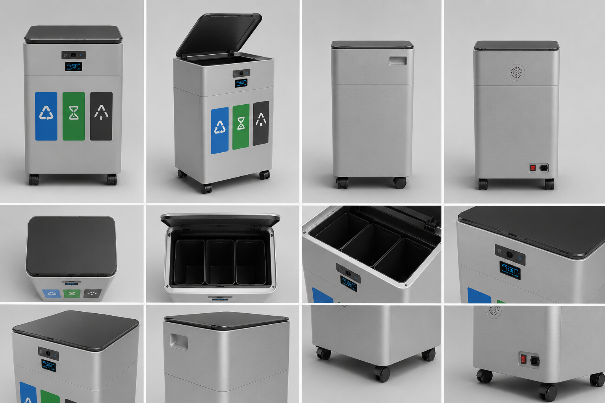
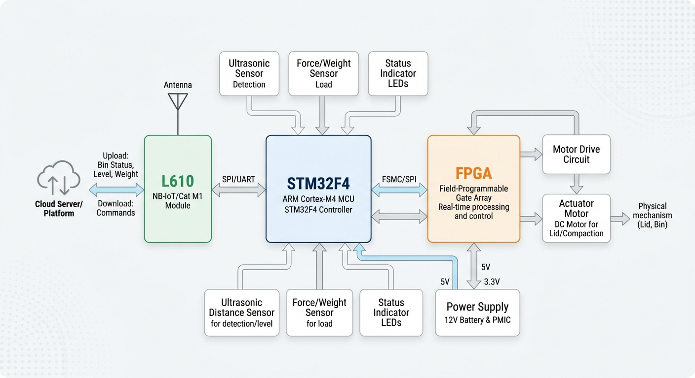

智能垃圾桶技术详解

系统架构
本项目主要由 STM32 微控制器（MCU）与底层 FPGA 构成协同处理架构组合控制。FPGA 负责高速数据采集与图像初步处理，MCU 负责系统逻辑控制、云端通信与电机驱动。两者通过 SPI / UART 接口实现高速无缝的数据交换，使得整个系统既具备强劲的外设驱动能力，又拥有出色的边缘计算算力。

工作原理
- 1. 超声波与红外传感器检测到人体靠近，MCU 控制舵机打开垃圾桶盖。
- 2. 投入垃圾后，摄像头采集图像并传递给 FPGA 进行边缘检测与预处理。
- 3. 识别结果由主控判断，驱动内部挡板将垃圾分入对应类别的桶中。
- 4. 温湿度与称重传感器实时运作，在桶内满载时发出声音及灯光报警，并上报云端数据库。
硬件规格与技术指标
我们的硬件选型严格平衡了功耗、性能和成本。核心模块包括：
- 微控制器核心： STM32F411CEU6，基于 ARM Cortex-M4 内核，专研的 FreeRTOS 确保了传感器轮询与响应的极低延迟。
- 视觉协处理器： 采用低功耗 FPGA，运用硬件并行处理特性，运行图像算法，缓解了 MCU 的算力压力。
- 执行及传感矩阵： SG90大扭矩舵机、HC-SR04超声波模块、OV7670高清摄像头、HX711压力称重模块。